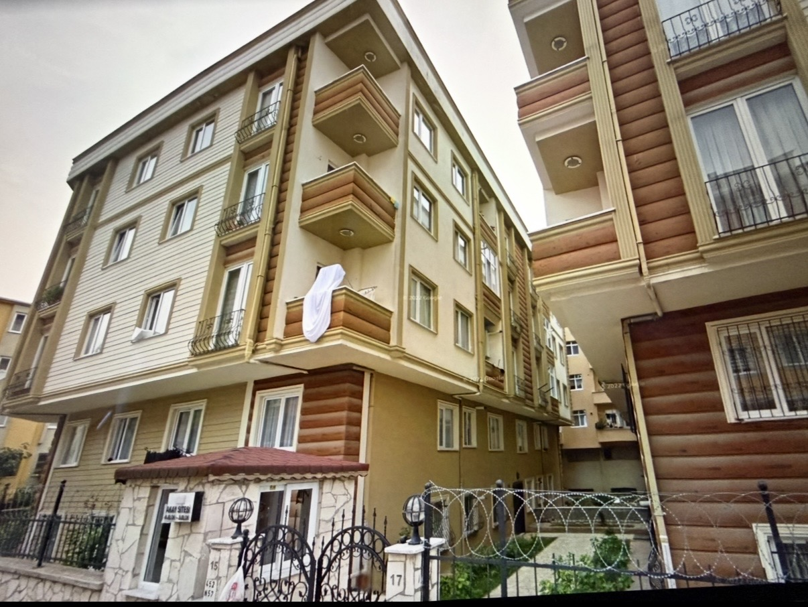
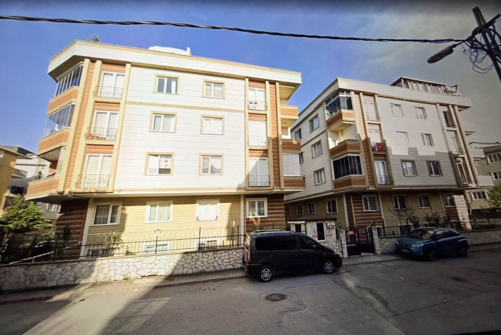

Toplu Konut Projelerimiz
Akay Yapı Rezidance
* Bu projemiz, denize sıfır konumuyla mavi ve yeşili birleştiren, lüks detaylarla donatılmış özel bir yaşam alanıdır.
* Rize Gündoğdu bölgesinde tamamlanmış Rezidance projesidir.
* 160 daireden oluşan akıllı ev sistemi ile tasarlanmıştır.
Akay Sitesi



← Fotoğrafları yana kaydırın →
* Şehir merkezinde, modern mimari ve akıllı ev teknolojilerinin buluştuğu yüksek konforlu Site projesi.
* 2010 yılında tamamlanan toplu konut projesidir.
* 40 daireden oluşan iki bloklu site alanıdır.
Sarı Konaklar Sitesi


Özenle hazırlanmış mimari proje çalışmaları ile 2015 yılında tamamlanmışdır.
72 daireden oluşan bir toplu konut projesidir.